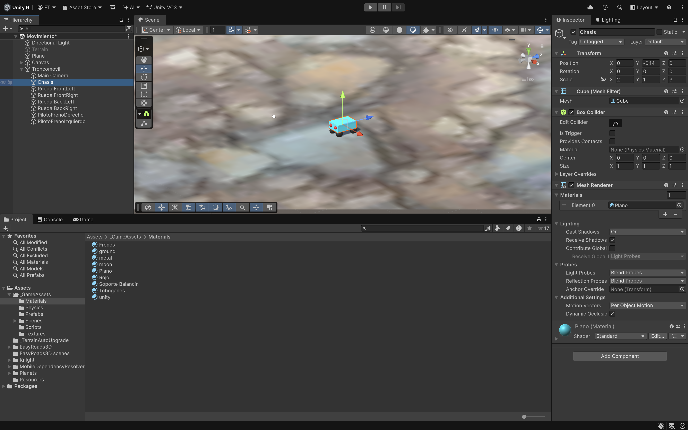
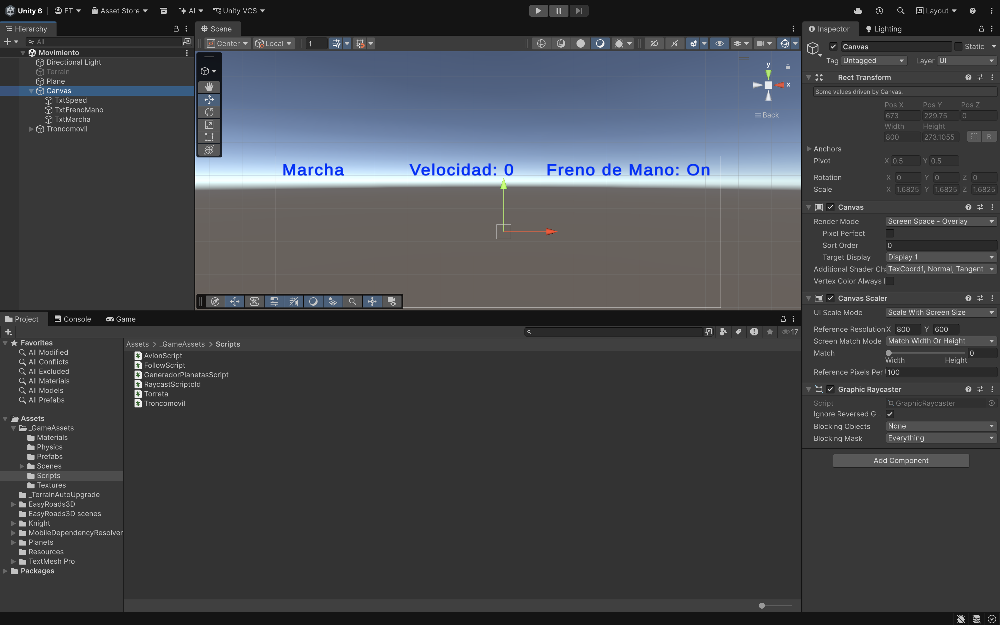
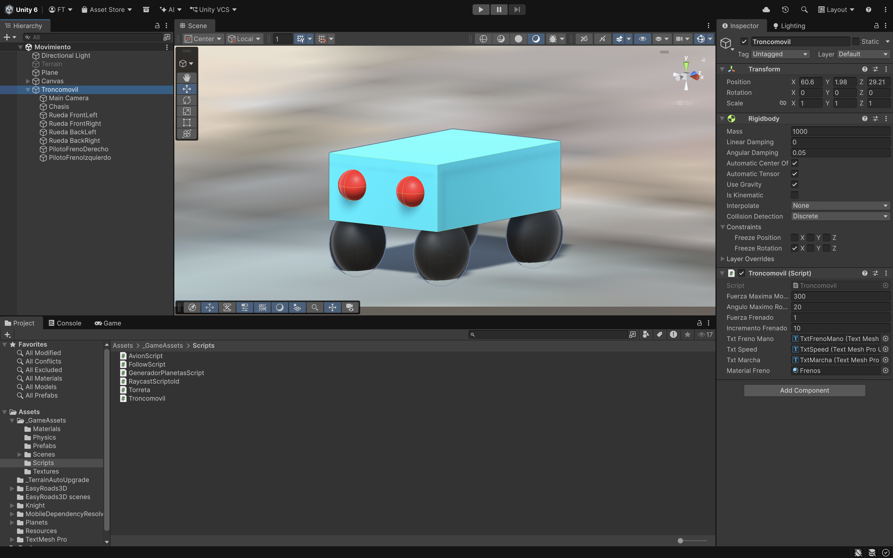
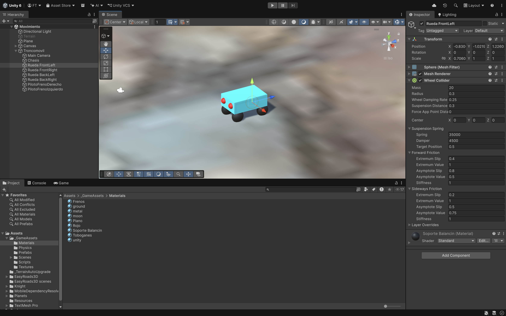
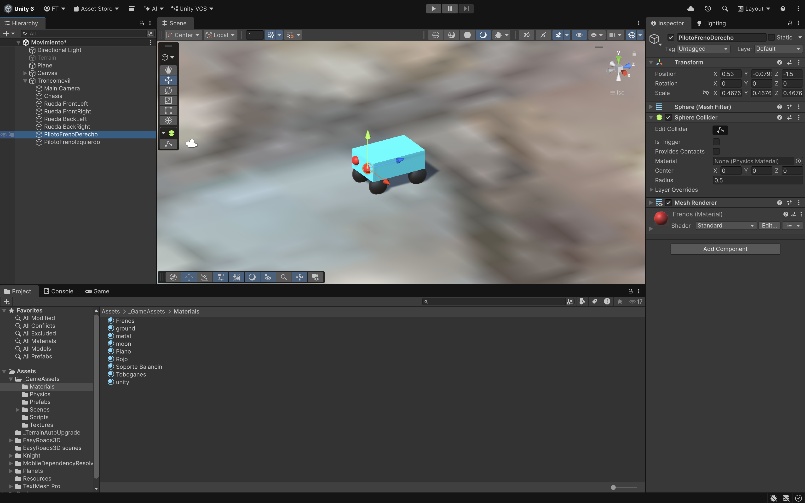
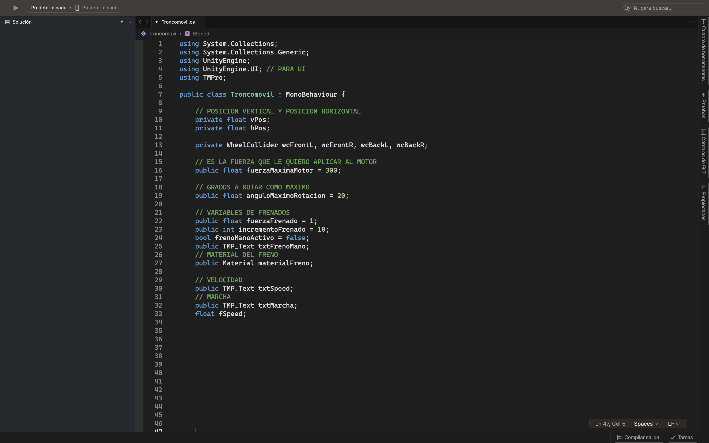
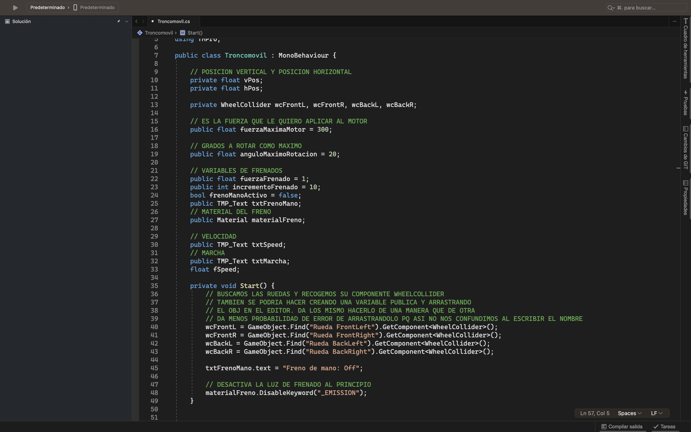
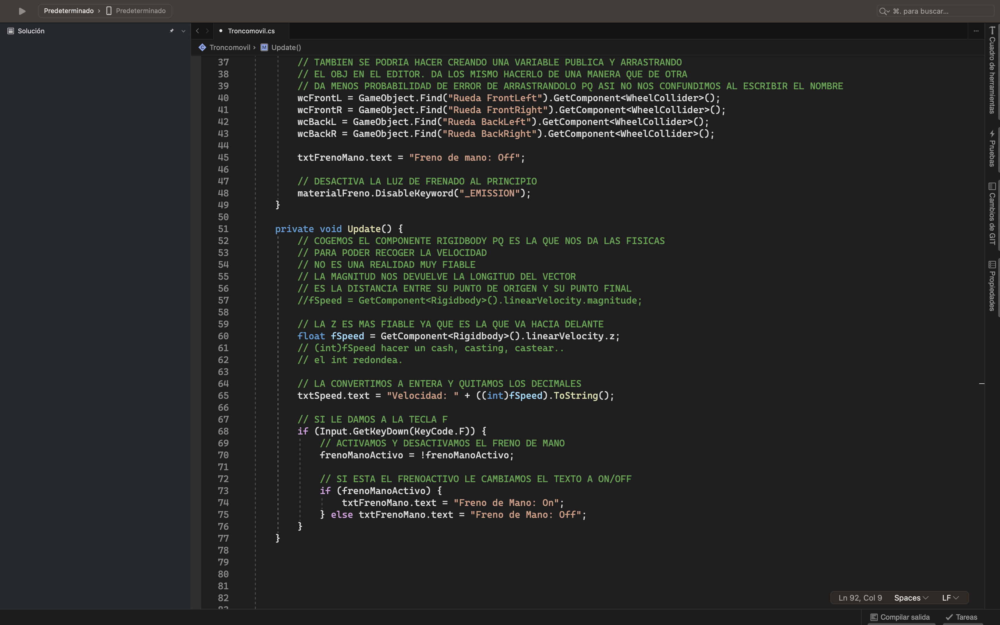
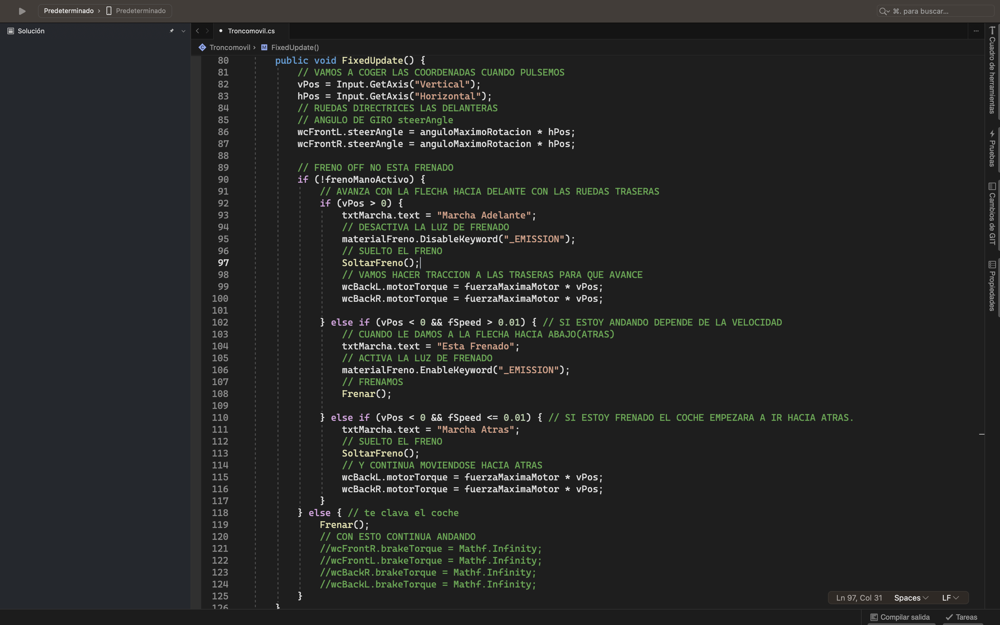
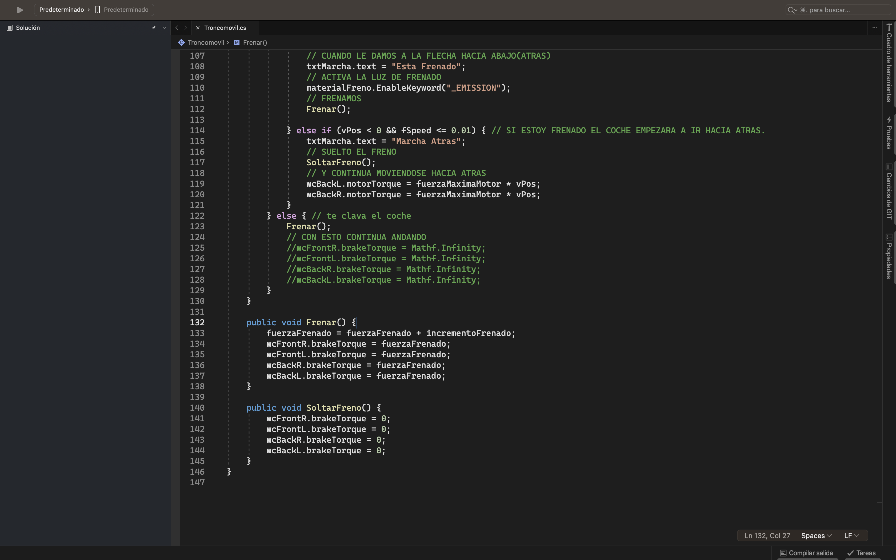

Haremos un coche con sus 4 ruedas, se moverá y frenara con las flechas.
Para ello necesitaremos una estructura de carpetas que tendrán el
contenido necesario para hacer el juego que lo iremos incluyendo poco a poco:
_GameAssets
• Materials.
o Todos los Objetos tienen que tener un material de color.
• Scenes.
o Movimiento.
• Scripts.
o Troncomovil.cs.
Tendremos que crear dentro de esta escena:
• Suelo (Plano).
• TroncoMovil.
• Canvas.

Tendremos un coche que se moverá con las flechas hacia delante, atrás, derecha a izquierda. Con la
"F" frenara y los frenos se activarán. Tendremos un Canvas donde pondremos la velocidad, la marcha y si
está frenando o no.
Crearemos un plano con un material..
Necesitamos 3 Textos que los cargaremos desde el script del Troncomovil.cs:
• TxtSpeed.
• TxtFrenoMano.
• TxtMarcha.

EL Troncomovil será un GO vacío y tiene que mirar hacia la Z. Está formado por los siguientes componentes:
• Rigidbody.
• Un Script Troncomovil.cs (lo veremos más adelante).
El script tiene unos parámetros que tendremos que arrastrar.

• MainCamera la pondremos en la parte de atrás del coche.
• Chasis (Cube) con un material.
• Rueda FrontLeft con un componente Wheel Collider.
• Rueda FrontRight con un componente Wheel Collider.
• Rueda BackLeft con un componente Wheel Collider.
• Rueda BackRight con un componente Wheel Collider.

En principio todas las ruedas tendrán los mismos valores en el componente Wheel Collider.
Borrar la MainCamara que se crea por defecto.
• PilotoFrenoDerecho (Shpere).
• PilotoFrenoIzquierdo (Shpere).
Los PilotosFreno tendrán el mismo material.

Necesitamos una serie de variables alguna de ellas publicas para poder modificar su valor en el script:
• vPos y hPos para saber los valores de las teclas.
• De tipo WheelCollider wcFrontL, wcFrontR, wcBackL, wcBackR para cada rueda.
• fuerzaMaximaMotor que aplicaremos al coche.
• anguloMaximoRotacion para los giros derecha e izquierda.
• Para el Frenado:
o fuerzaFrenado.
o incrementoFrenado.
o boolfrenoManoActivo.
o txtFrenoMano del Canvas.
o materialFreno.
• Para la velocidad:
o txtFrenoMano.
o txtMarcha.
o fSpeed.

Método Start().
• Buscamos las ruedas del coche.
• El txtFrenoMano lo ponemos a OFF.
• Desactiva el materialFreno con una propiedad del material.

Método Update().
• Cogemos el componente Rigidbody para poder recoger su linearVelocity.Z es más fiable
y funcionará mejor la marcha atrás.
• Mostrar la velocidad en el Canvas.
• Y si damos a la tecla "F" activamos y desactivamos el frenoManoActivo poniendo un texto
en el Canvas.

Las físicas las haremos el en FixedUpdate() como siempre.
Método FixedUpdate().
• Recoger las coordenadas de las teclas Vertical(vPos) y Horizontal(hPos).
• Las 2 Ruedas delanteras hacen el giro asi que recogemos en el steerAngle el ángulo * hPos.
• Si no esta el freno de mano puesto iremos comprobando la coordenada vertical y su velocidad:
o VPos > 0.
- Ponemos el el Canvas Marcha Adelante.
- Desactivar las luces del freno.
- Método SoltarFreno().
- Hacemos que las 2 Ruedas traseras se muevan fuerzaMaximaMotor * vPos.
o VPos < 0 y fSpeed > 0.1 Esta moviendose y le doy a la flecha hacia atrás y se frena.
- Ponemos el Canvas Frenado.
- Activar las luces del freno.
- Método Frenar().
o VPos < 0 y fSpeed <= 0.1 Esta moviendose y le doy a la flecha hacia atrás y se moverá.
- Ponemos el Canvas Marcha Atrás.
- Método SoltarFreno().
- Hacemos que las 2 Ruedas traseras se muevan fuerzaMaximaMotor * vPos.
• Si esta el freno de mano puesto llamamos al Método Frenar().

Método Frenar().
• Sumar a la fuerzaFrenado el incrementoFrenado.
• Y ponerselo a las 4 ruedas con el método brake.Torque.
Método SoltarFreno().
• Poner las 4 ruedas brake.Torque a 0 para que se pueda mover.
